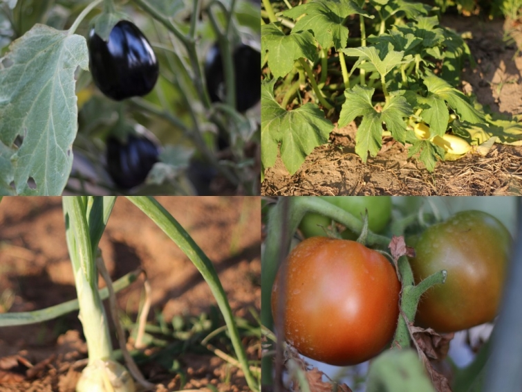

.png)
.PNG)
.PNG)
.PNG)
.PNG)
.PNG)
.JPG)
.JPG)
.PNG)
.PNG)


his vegetable garden.

He is a retired farmer but still keeps up this place each summer and deals with the ever persistent drought.
We like to debate the qualities of corn varieties. For many years, he was a die hard Silver Queen fan – and he converted me to being one. Then the traitor went off and left me for another – Ambrosia. Ambrosia is a mix of yellow and white kernels, and yes, it is sweet, but I still love me some Silver Queen. 🙂
The other evening we were talking about the vegetables, and I lamented that he had not planted any of my favorite this year. Well lo and behold, the next morning he went over to his garden and planted a few rows of it for me! Sooo, I will be enjoying some wonderfully sweet Silver Queen corn later in the summer! 🙂 Bless his heart!
When I was a little girl, my father had a small farm, and we always had a big vegetable garden. Like most young children I hated working in it – especially in the heat of a Georgia summer….swatting gnats, pulling weeds, getting your arms scratched by the rough leaves of the plants. So I do appreciate all that goes into tending a garden of this nature.
When you have this kind of bounty knocking at your door, meal planning is easy.
You just take this….
Shuck it; clean it, and boil it in a combination of water and milk. (I’ve read that the milk makes it sweeter, but I really don’t know if that is true.)
Then you peel, slice, and cube the eggplant. 
Salt it, and let it rest on paper towels a while before you bathe it in an egg-milk bath. Then take it straight from its bath into a coat of flour with some salt sprinkled in. A lot of people use cornmeal, but I like the taste of the flour coating better – and yes, I know I could put the flour in a zip lock bag, and it would be less messy – but I enjoy my title of “Queen of the Flour Mess Maker.” 🙂 (That’s precisely why I wear an apron when I cook.)
Paula Deen eat your heart out.
I do love the corn and eggplant, but my heart is really smitten with the first summer tomatoes. They are almost as good as chocolate to me! So when the first ones are ready on the vine, I make what I call Caprese salad – Southern style. First I slice those beautiful tomatoes. (I had an heirloom one to mix in.) Then I layer the slices with fresh mozzarella slices and a few basil leaves from my herb garden. To make them Southern, I put in some rings of sweet Vidalia onion, then drizzle olive oil over it all. The final touch is a dusting of salt and freshly ground pepper.
Doesn’t that look delicious?
Here is the final plate all ready to be enjoyed.
Yes, there is fried chicken on this plate too – but it wasn’t prepared by me. I don’t like to fry more than one thing at a time, so it was brought home in a box (just being honest with you here.)
My oldest son would fuss at me about the unhealthy-ness of this meal, and he would be correct. I do have my veggies, but since they have either been fried in hot oil or baptized in butter they have lost some of their good-for-you-ness. He would also be quick to point out the lack of green in this meal – and again, he would be correct.
Well look what just arrived at the door….
Now we will have something green at our next meal. 🙂
Until next time…


.PNG)
Ahhh… Aunt Kelly this is amazing. I love the whole site and all your ideas and photogaphs but especially reading about and seeing pictures from Papa’s garden. I’m hooked on your blog. So glad it finally came to fruition!
———————————————————————–
Welcome Paige! I’m so glad you visited my blog and left a comment! I thought you would like this post. Hope you check out the one on Henderson Village today too. Thank you for your sweet words. This has been a lot of work, but I am loving it! Hope you all are settled in your new home.
Aunt Kelly
p.s. Thanks for the follow on Pinterest too!
Hi, Kelly, just clicked over & noticed that Kevin and Layla shot your house last year. HOw fun, aren’t they the best? And you started a blog after that & you’re doing a nice job with it. My dad not only builds things, he grows veggies too. I’ll be sharing more of our bounty on my blog, as I do every year. Looks a lot like your table! We just had our first tomato sandwich of the year & boy, was it good.
———————————————————————–
Thanks Rhoda! Kevin and Layla were a lot of fun to have around, and the fact that it was almost Christmas made it even better. I could kick myself for not getting my picture made with them. Too tired from decorating to think!
Your parents are amazing! I remember reading about your dad’s garden last year, I believe. It looked wonderful! We’ve had more rain this year, so I am thinking the gardens should do better. We’ve not had tomato sandwiches yet, but we did just have blt’s. yummy!
Thank you for clicking over and leaving your kind words (especially with all you have to do right now.) Best of luck with Haven. I hope/plan to be there next year, and yes y’all are doing it next year again, right?
Kelly
Yowzer! That meal looks delicious. We come from the same “people”. and they are good ones, aren’t they?
I have only had spinach from my garden, but we have had some yumminess at my parents the last couple of Sundays. This has included…creamed new peas and potatoes, fresh spinach, cucumbers and onions, and cherry pie from my mother-in-law’s trees.
It does not get any better than that!
——————————————————————-
Susan, I agree the folks are good people. I like spinach raw in salads…have never even cooked it. Bad me, huh? Put the peas and cucumbers sound delicious! Can’t wait til we get those. Sounds like you are having a good feast too!
Kelly
I was just blogging about the overwhelming need I have to eat better. Thanks for the inspiration. It was a bright reminder to read your post and remember all the healthy options this season brings. I agree with Aimee…beautiful photographs!
———————————————————————–
Julianna, thanks for the kind words on my photography. Summer certainly lends itself to better eating – fruits and veggies galore! Peaches and blackberries are next.
Kelly
Sounds and looks yummy to me! Our blueberries are ripe and ready for pickin’ if you need some!
————————————————————————
Thanks Paulette! And the blueberries sound delicious! I’ll see what we can do about picking them…busy week here now that it has finally stopped raining.
Kelly
Kelly, your photographs are just stunning! And that is SO sweet of your father-in-law to bring those beautiful vegetables and then go back and plant your favorite corn {that actually made me tear up a little bit, haha!} Thanks for sharing this beautiful meal. 🙂
———————————————————————-
Aimee – I can’t thank you enough for the photography compliment! I am a beginner with my camera, plus I am blind as a bat! So getting my pictures to look decent is a major accomplishment. My father in law is super sweet. Glad you enjoyed seeing the meal.
Wish I could send some fresh veggies to all of you!
Kelly
Looks delicious! Don’t you just love summer meals??? Fried chicken feels so summery to me, but I just love fresh home-grown, produce. There’s nothing like it!
——————————————————————-
Lindsay,
Summer eating IS the best! I crave those summer tomatoes the rest of the year. So glad you stopped by this morning.
Kelly